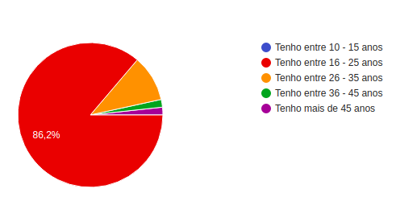
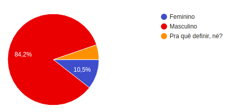
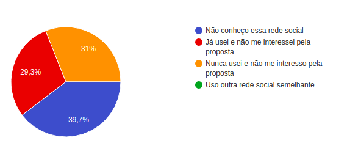
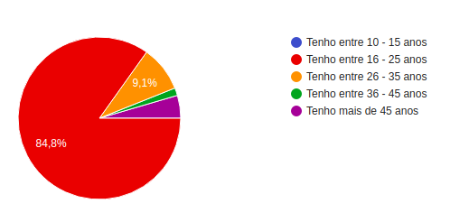
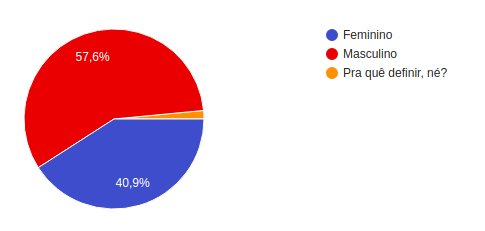
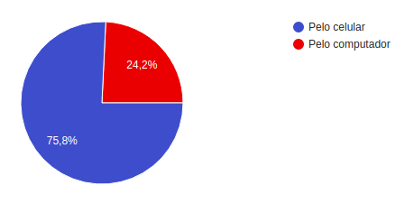
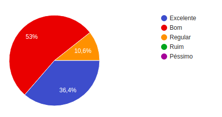

Questionário
Trata-se de uma técnica aplicada em grandes públicos e exige preparação prévia, na qual as perguntas devem ser bem elaboradas de acordo com o tipo de informação que deseja-se extrair.
Rastreabilidade
| Nome | Papel | Observação |
|---|---|---|
| Helena Goulart | Elaboradora | Membro da equipe |
1.1 Metodologia
O questionário foi elaborado classificando o público em dois grupos: aqueles que são usuários do aplicativo e aqueles que não são. Dessa forma, foi possível direcionar as perguntas para a elicitação de requisitos. O questionário foi divulgado para os familiares dos integrantes da equipe e também no grupo de estudantes da Faculdade do Gama (FGA) no Facebook. No total foram 124 respostas obtidas.
1.2 Processo de desenvolvimento
Você é um usuário do Pinterest?

A pergunta acima direcionou os participantes para questionários distintos.
O questionário a seguir refere-se aos não-usuários do Pinterest:
Qual a sua idade?

Qual é o seu sexo?

Por que você não é um usuário do Pinterest?

O questionário a seguir refere-se aos usuários do Pinterest:
Qual a sua idade?

Qual é o seu sexo?

Através de qual dispositivo você prefere usar o Pinterest?

Como você classifica a sua experiência com o Pinterest?

Você conhece outra aplicação semelhante à esta?

Quais os temas que você pesquisa com frequência nessa rede social?
- Arquitetura e Decoração;
- Faça você mesmo (DIY);
- Organização;
- Moda e beleza;
- Receitas;
- Inspirações para datas comemorativas;
- Fotos de celebridades;
- Wallpapers;
- Design;
- Fotos de paisagens;
- Tatuagens;
- Fotos de animais;
- Artes e ilustrações;
- Frases inspiradoras;
- Fanart;
- Memes;
- Fotografia;
- Fotos de jogos de vôlei.
1.3 Requisitos Elicitados
| Código | Descrição |
|---|---|
| Q1 | A rede social deve abranger conteúdos que mantenham ativos os usuários que compõe o principal púlico, os jovens da faixa etária de 16 a 25 anos. |
| Q2 | A rede social deve conter uma experiência de usuário melhor para que o site possa ser tão acessado pelo público quanto o aplicativo. |
| Q3 | A interface do usuário deve ser agradável para melhorar as experiências e torná-las excelentes. |
| Q4 | A rede social deve procurar diferenciais perante seus maiores concorrentes, weheartit.com e tumblr.com. |
| Q5 | A rede social deve incluir sempre novos conteúdos sobre os temas mais pesquisados em busca de mantê-los atualizados, mas também procurar abranger temas diferentes para atrair novos públicos específicos, como os praticantes de esportes, por exemplo. |
1.4 Conclusão
As perguntas realizadas no questionário foram importantes e necessárias para conhecimento do público, todavia não auxiliaram na elicitação de requisitos, uma vez que houveram poucos questionamentos direcionados às formas de uso da aplicação e mais perguntas referentes ao perfil do usuário.
1.5 Sugestões de melhoria
A equipe concordou que um novo questionário com novas perguntas seriam mais colaborativo para a elicitação de mais requisitos. Para o novo questionário, sugerem-se as seguintes perguntas:
1- Quais funcionalidades a seguir classificam a causa do seu uso do Pinterest?
- Inspirações
- Diversão
2- Qual é a sua frequência de uso do chat do Pinterest?
- Alta
- Média
- Baixa
3- A aba de Notificações cumpre o papel de avisar e chamar a sua atenção sobre a interação de outros usuários com o seu perfil?
- Sim
- Acredito que pode melhorar
- Não
4- Você considera o conteúdo do Pinterest exclusivo?
- Com certeza
- Encontro o mesmo conteúdo em outras fontes
5- Você sente falta de uma amplitude maior de temas no Pinterest?
- Sim
- Não
6- Você abre o Pinterest quando...
- Não tenho nada para fazer
- É sempre a minha primeira fonte de pesquisas